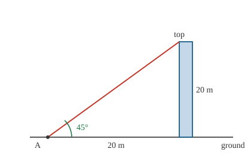
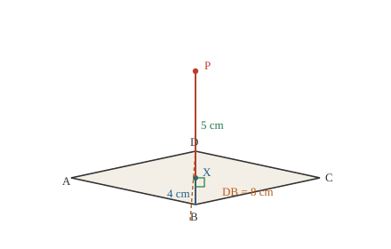

<script src="/assets/redirect.js"></script>
<section class="theory" data-section="IGCSE-15.5">
<h2>15.5 Solving problems using trigonometry</h2>
<p class="src">Based on Cambridge IGCSE Mathematics Core &amp; Extended Coursebook, Chapter 15, printed pp.499–504 (angles of elevation and depression, two- and three-dimensional problems). Printed pages were read from the coursebook scans (printed 499–504). Own wording and new numbers. Teaching stops before 15.6 Sines, cosines and tangents of angles greater than 90° on printed p.505. The calculator is assumed to be in degrees mode.</p>
<p class="key-words"><strong>Key words:</strong> <em>angle of elevation</em>, <em>angle of depression</em>, <em>angle between a line and a plane</em></p>
<p>An <strong>angle of elevation</strong> is measured upwards from the horizontal; an <strong>angle of depression</strong> is measured downwards from the horizontal. The two angles between the same line of sight and the horizontal are equal. In a vertical plane the right angle is between the vertical and the horizontal.</p>
<figure>

<figcaption>Worked example 1: when the angle of elevation is \(45^\circ\), the height of the tower equals the 20 m horizontal distance, because \(\tan 45^\circ=1\).</figcaption>
</figure>
<p>In three dimensions, the <strong>angle between a line and a plane</strong> is the angle between the line and its projection on the plane. If \(P\) is a point not on the plane and \(X\) is the foot of the perpendicular from \(P\) to the plane, the angle between \(PB\) and the plane is \(\angle PBX\).</p>
<figure>

<figcaption>If \(PX=5\) cm and the base diagonal is 8 cm, then \(XB=4\) cm and \(\tan\angle PBX=5/4\).</figcaption>
</figure>
<div class="worked-example">
<h4>Worked example 1</h4>
<p class="src">Book: elevation on printed pp.499–500. New numbers.</p>
<p>From a point on horizontal ground 20 m from the foot of a vertical tower, the angle of elevation of the top of the tower is \(45^\circ\). Find the height of the tower.</p>
<ol class="steps">
<li>\(\tan 45^\circ=1\), so the height equals the horizontal distance and is 20 m. <span class="mark">A1</span></li>
</ol>
<p class="final"><strong>Answer:</strong> 20 m</p>
</div>
<div class="worked-example">
<h4>Worked example 2</h4>
<p class="src">Book: a 3D pyramid angle on printed pp.502–504 style. New numbers, matching the official-paper measurements used later in this section.</p>
<p>A pyramid has a square base \(ABCD\) with diagonal \(DB=8\) cm. The vertex \(P\) is vertically above the centre \(X\) of the base, and \(PX=5\) cm. Find the angle between \(PB\) and the base, to 3 significant figures.</p>
<ol class="steps">
<li>\(XB=4\) cm and the required angle is \(\angle PBX\), so \(\tan\angle PBX=5/4\). <span class="mark">M2</span></li>
<li>The angle is \(\tan^{-1}(1.25)=51.340\ldots^\circ\), which is \(51.3^\circ\) to 3 significant figures. <span class="mark">A1</span></li>
</ol>
<p class="final"><strong>Answer:</strong> \(51.3^\circ\)</p>
</div>
<h3>Common mistakes</h3>
<ul>
<li>Measuring the angle of elevation or the angle of depression from the vertical instead of from the horizontal.</li>
<li>In three dimensions, using a length that is not the projection of the sloping edge onto the plane (for example using a side of the square instead of half of the diagonal).</li>
<li>Rounding a trigonometric value too early, then losing accuracy in the final angle or length.</li>
</ul>
<h3>Quick checks</h3>
<div class="quick-check" data-q="QC1">
<h4>Quick check 1</h4>
<p>From a point on horizontal ground 20 m from the foot of a vertical tower, the angle of elevation of the top of the tower is \(45^\circ\). What is the height of the tower, in metres?</p>
<details><summary>Worked solution</summary>
<ol class="steps">
<li>\(\tan 45^\circ=1\), so the height equals the horizontal distance and is 20 m. <span class="mark">A1</span></li>
</ol>
<p class="final"><strong>Answer:</strong> 20 m</p>
</details>
</div><div class="quick-check" data-q="QC2">
<h4>Quick check 2</h4>
<p>A kite string of length 50 m makes a \(30^\circ\) angle with the horizontal ground. What is the height of the kite above the ground, in metres?</p>
<details><summary>Worked solution</summary>
<ol class="steps">
<li>The height is the opposite side to \(30^\circ\), so it is \(50\sin 30^\circ=50\times 1/2=25\). <span class="mark">A1</span></li>
</ol>
<p class="final"><strong>Answer:</strong> 25 m</p>
</details>
</div><div class="quick-check" data-q="QC3">
<h4>Quick check 3</h4>
<p>From the top of a vertical cliff 12 m high, the angle of depression of a boat is \(45^\circ\). How far is the boat from the foot of the cliff, in metres?</p>
<details><summary>Worked solution</summary>
<ol class="steps">
<li>The angle of depression from the horizontal equals the angle of elevation from the boat, which is \(45^\circ\). \(\tan 45^\circ=1\), so the horizontal distance equals the height and is 12 m. <span class="mark">A1</span></li>
</ol>
<p class="final"><strong>Answer:</strong> 12 m</p>
</details>
</div>
</section>
